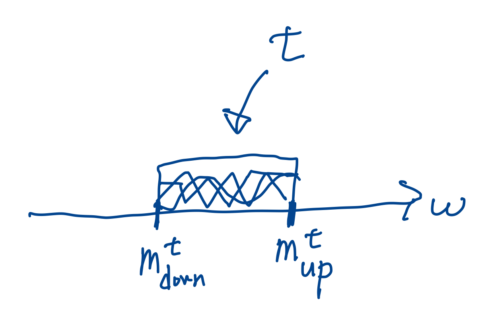

執筆者: 後藤 達哉, 執筆日: 2025年11月5日
[RS99]をただまとめただけの記事で新規性はないことを注記しておく．
Cohen実数を追加しない強制法は(2回)反復したら，Cohen実数が付け加わりうる． そこで反復強制法でCohen実数が付け加わらないことを保証するには，反復で保たれる，より強い条件が必要となる．それが本記事で紹介するものである．
この記事では，「creature強制法」は登場しないものの，creating pairやcreatureのようなcreature強制法の材料となるものは登場する．それらの概念を使ってCohen実数を付け加えない十分条件を与えるのである．
十分大きな正則基数$\chi$を固定しておく．また，$\H = \seq{H(i) : i \in \omega}$は$H_\chi$に属する$\omega$列である．
$\H$のcreatureとは3つ組$t = (\nor[t], \val[t], \dis[t])$であって次を満たすもののことである．
$\val[t]$が非空なら2番目の条件の$m_0, m_1$は一意なので，それらを$m_{\mathrm{down}}^t$と$m_{\mathrm{up}}^t$と書く．
$\CR[\H]$で$\H$のcreature全体のなす集合を表す．
$K \subseteq \CR[\H]$とする．
$\Sigma \colon [K]^{\le \omega} \to \Pow(K)$が$K$上のcomposition operationであるとは，次の4条件を満たすことである
このときペア$(K, \Sigma)$をcreating pairという．
$s \in \Sigma(t_0, \dots, t_{n-1})$ということの意味は，「$t_0, \dots, t_{n-1}$を繋げて中身を薄めたものの一つが$s$である」と解釈できる．
$(K, \Sigma)$をcreating pairとする．
$t \in K$について $$ \basis(t) = \{ w \in \prod_{i < m_\mathrm{down}^t} \H(i) : (\exists s \in \Sigma(\{t\}))(\exists u)((w, u) \in \val[s]) \} $$ とおく．
creatureの有限列$t_0, \dots, t_{m-1}$で$m_\mathrm{up}^{t_i} = m_\mathrm{down}^{t_{i+1}}$ for every $i < m-1$を満たしているものを考える． $w \in \prod_{i < m_\mathrm{down}^{t_0}} \H(i)$とする． このとき， $$ \pos^*(w, t_0, \dots, t_{m-1}) = \{ u \in \prod_{i < m_\mathrm{up}^{t_{m-1}}} \H(i) : (\exists s \in \Sigma(\{t_1, \dots, t_{m-1} \}))((w, u) \in \val[s]) \} $$ とおく．
creatureの有限列$t_0, \dots, t_{m-1}$で$m_\mathrm{up}^{t_i} = m_\mathrm{down}^{t_{i+1}}$ for every $i < m-1$を満たしているものを考える． $w \in \prod_{i < m_\mathrm{down}^{t_0}} \H(i)$とする． これらについて，その可能性 (possibility)の集合を \begin{align*} \pos(w, t_0, \dots, t_{m-1}) = \{ u \in \prod_{i < m_\mathrm{up}^{t_{m-1}}} \H(i) : \,&\text{自然数列$0 < a_0 < \dots < a_l = m$があり，} \\ & u \restricted m_{\mathrm{down}}^{t_{a_0}} \in \pos^*(w, \{t_i\}_{i \in [0, a_0)}), \\ & u \restricted m_{\mathrm{down}}^{t_{a_1}} \in \pos^*(u \restricted m_{\mathrm{down}}^{t_{a_0}}, \{t_i\}_{i \in [a_0, a_1)}), \\ & \dots \\ & u \in \pos^*(u \restricted m_{\mathrm{down}}^{t_{a_{l-1}}}, \{t_i\}_{i \in [a_{l-1}, a_{l})}) \} \end{align*} と定める．
$w$と$t_0, \dots, t_{m-1}$が仮定を満たしていないときには，$\pos(w, t_0, \dots, t_{m-1}) = \varnothing$とする．
$(K, \Sigma)$がniceであるとは，任意の$t_0, \dots, t_{n-1} \in K$と$s \in \Sigma(t_0, \dots, t_{n-1})$について$\basis(t_0) \subseteq \basis(s)$であることを言う．
以後creating pairは常にniceであることを仮定する．
niceとは，creatureをshrinkしても，もともとあったbasisは減らない，という要請である．
creatureの列$\seq{t_0, t_1, \dots}$がpure candidateであるとは $$ \forall i\ (m^{t_i}_\mathrm{up} = m^{t_{i+1}}_\mathrm{down}) $$ かつ $$ \exists w \in \basis(t_0)\ \forall i\ (\pos(w, t_0, \dots, t_i) \subseteq \basis(t_{i+1})) $$ を満たすときをいう．
$(K, \Sigma)$に関するpure candidate全部の集合を$\PC(K, \Sigma)$と書き，この集合の元であってノルムが無限大に発散するもの全部の集合を$\PC_\infty(K, \Sigma)$と書く．
$\PC(K, \Sigma)$の順序関係$\bar{t} \le \bar{s}$を次で定める． $\bar{t} \le \bar{s}$なのは次のとき： $\omega$のfinal segmentの区間分割$(I_n : n \in \omega)$があって， $t_n \in \Sigma(s_i : i \in I_{n+1})$ (for every $n \in \omega$).
$(K, \Sigma)$をcreating pairとして，$\bar{t} = \seq{t_n : n \in \omega} \in \PC(K, \Sigma)$とする．
$(\bar{t}, h_1, h_2)$-boundingはざっくり言うと，ノルムの増加度合いが$h_1$程度なジェネリック拡大の中のpure candidateをノルムの増加度合いが$h_2$程度なグラウンドモデルのpure candidateで覆えるということ．
creating pair $(K, \Sigma)$ on $\H$について次を定義する．
$(K, \Sigma)$をstrictly monotonicかつspreadなcreating pair for $\H$とする． $\bar{t} = \seq{t_n : n \in \omega} \in \PC_\infty(K, \Sigma)$かつ$h_1, h_2 \in \omega^\omega$として次を仮定する． $$ \forall n\ (0 < h_1(m^{t_n}_\mathrm{down}) \le h_2(m^{t_n}_\mathrm{down}) \le \nor[t_n]) $$ かつ $$ \forall^\infty n\ (h_2(m^{t_n}_\mathrm{down}) \le \nor[t_n] - 1). $$ このとき，$(\bar{t}, h_1, h_2)$-boundingな強制概念はCohen実数を追加しない．
証明．
$w \in \basis(t_0)$で$\forall n\ \pos(w, t_0, \dots, t_{n-1}) \subseteq \basis(t_n)$なものを取る ($\PC$の定義より取れる)． 次の空間$\mathcal{X}$を考える． $$ \mathcal{X} = \{ x \in \prod_{m \in \omega} H(m) : \forall n\ (x \restricted m^{t_n}_\mathrm{up} \in \pos(w, t_0, \dots, t_n)) \}. $$ これは完全ポーランド空間である． 孤立点がないことは次の観察より従う：$(K, \Sigma)$がstrictly monotonicかつspreadかつ$\lim_n \nor[t_n] = \infty$なので，十分大きな$n$と各$u \in \basis(t_n)$について2つの異なる$v_1, v_2 \in \pos(u, t_n)$が見つかる．
よって$P$がCohen実数を追加するなら，Cohen実数$c \in \mathcal{X}$も追加する． $V[c]$において，帰納的に次のような$\bar{s} = \seq{s_n : n \in \omega} \in U_{h_1}(\bar{t})$であって， $$ \forall n\ (s_n \in \Sigma(t_n) \text{ and } c \restricted m^{s_n}_\mathrm{down} \in \pos(w, s_0, \dots, s_{n-1}) \subseteq \basis(s_n)) $$ を満たすものを取る．これはspread性より取れる (spread一回ではノルムを半分にしかできないが，繰り返し使うといくらでもノルムを小さくできる)．また$(K, \Sigma)$がniceであることも使う．
$\bar{s}^* \in U_{h_2}(\bar{t}) \cap V$であって，$\bar{s} \le \bar{s}^*$を満たすものがないことを証明すればよい． そのために$\bar{s}^* \in U_{h_2}(\bar{t}) \cap V$とする． $V$で働いて，次の集合を考える： $$ \mathcal{O} = \{ x \in \mathcal{X} : \exists n\ (x \restricted m^{s^*_n}_\mathrm{down} \not \in \pos(w, s^*_0, \dots, s^*_{n-1})) \}. $$ これは$\mathcal{X}$の稠密開集合である． 稠密性を示すのにstrict monotononictyを使って示す． ここでは，十分大きな$n$について，$\nor[s^*_n] \le h_2(m^{s^*_n}_\mathrm{down}) \le \nor[t_m]$であることを使う．ただし$m$は$m^{t_m}_\mathrm{down} = m^{s^*_n}_\mathrm{down}$となる一意な自然数．
したがって，$V[c]$において，$c$はCohen実数 over $V$だから，$c \in \mathcal{O}$となり，$\bar{s} \not \le \bar{s}^*$が従う． (証明終了)
$(K, \Sigma)$をcreating pairとする．
$(K, \Sigma)$をcreating pairとし，$\bar{t} = \seq{t_n : n \in \omega} \in \PC_\infty(K, \Sigma)$とする．
creating pair $(K, \Sigma)$がsimpleであるとは，$\Sigma(S) \ne \varnothing$ならば$S$は一点集合となることを言う．
simpleであることを仮定すると，この文書の前半のcreating pairに関する概念の多くは非常にすっきりする．
creating pair $(K, \Sigma)$がreducibleであるとは，どの$t \in K$で$\nor[t] > 3$であるものについても，ある$s \in \Sigma(t)$が存在し，$\nor[t] / 2 \le \nor[s] \le \nor[t] - 1$を満たすことを言う．
$(K, \Sigma)$はsimpleかつreducibleなcreating pairとする． $\bar{t} = \seq{t_n : n \in \omega} \in \PC_\infty(K, \Sigma)$を$\nor[t_n] \ge 2$なるpure candidateとする． $\bar{\mathcal{F}} = (\mathcal{F}, <^*_\mathcal{F})$を$\bar{t}$-goodな半順序集合で$\bar{t}$が$(2, h)$-additive for every $h \in \mathcal{F}$なものとする． $\seq{P_\alpha, \dot{Q}_\alpha : \alpha < \beta}$をproper forcingのcountable support iterationで各$\alpha < \beta$について $$ P_\alpha \forces \dot{Q_\alpha} \text{ is } (\bar{t}, \bar{\mathcal{F}})\text{-bounding} $$ と仮定する． このとき$P_\beta$も$(\bar{t}, \bar{\mathcal{F}})$-boundingである．
証明はここでは省略する．
結論として，上記定理の仮定および命題の仮定を満たす$(\bar{t}, \bar{\mathcal{F}})$について，各iterandがproperかつ$(\bar{t}, \bar{\mathcal{F}})$-boundingなcountable support iterationにおいて，最終モデルはグラウンドモデル上のCohen実数を追加しない．
執筆中．
creatureの絵を描くのは，色々情報を捨てないと難しい．$\nor[t]$と$\dis[t]$の情報を捨てて，$\val[t]$の情報の一部だけを絵にするとこんな感じか：
